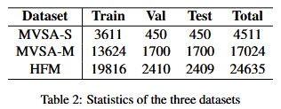

CLMLF-阅读笔记
CLMLF:A Contrastive Learning and Multi-Layer Fusion Method for Multimodal Sentiment Detection 阅读笔记
论文链接：CLMLF:A Contrastive Learning and Multi-Layer Fusion Method for Multimodal Sentiment Detection
代码链接：Link-Li/CLMLF
该论文收录于NAALC 2022
贡献
提出了一个基于Transformer-Encoder的多层融合模块。该模块利用多头自注意力捕捉图像和文本模态的内在相关性。
提出了两个对比学习任务——基于标签的对比学习和基于数据的对比学习。基于标签的对比学习任务可以使得模型学习多模态数据中的情感相关特征。基于数据的对比学习任务使得模型更具鲁棒性。增强模型对不变特征的学习能力。
方法
多层融合模块
该模块用于对其文本特征与图像特征。
该部分首先利用BERT对文本进行编码，得到文本特征 \(T = \{t_C, t_1, t_2, ..., t_S\}, T \in \mathbb{R}^{n_t \times d_t}\) 。利用ResNet对图像进行编码，得到图像特征 \(I_c^{\prime} \in \mathbb{R}^{p_i \times p_i \times d_i}\)。
利用以下公式，将图像特征展平到与文本特征相同维度。 \[ I^{\prime} = flatten(I_c^{\prime}W_I + b_I) \] 其中 \(I^{\prime} = \{i_1^{\prime}, i_2^{\prime}, ..., i_{n_i}^{\prime}\}, I^{\prime} \in \mathbb{R}^{n_i \times d_t}, n_i = p_i \times p_i\)
之后将 \(I^{\prime}\) 输入到Image Transformer层，利用该层获取最终的图像特征 \(I\) 。我的理解：该层是为了更好的捕获图像全局特征。
\[ \{i_1, i_2, ..., i_{n_i}\} = TE_I(\{i_1^{\prime}, i_2^{\prime}, ..., i_{n_i}^{\prime}\}) \\ I = \{i_1, i_2, ..., i_{n_i}\} \] 其中 \(TE_I\) 表示图像的Transformer Encoder。
之后将文本特征 \(T\) 和 图像特征 \(I\) 拼接起来，利用新型的多层Transformer来实现文本特征与图像特征的对齐。 \[ \{f_1, f_2, ..., f_{n_t + n_i}\} = TE_M(concat(T, I)) \\ F = \{f_1, f_2, ..., f_{n_t + n_i}\} \] 其中 \(TE_M\) 表示多模态的Transformer Encoder。
之后利用一个简单的注意力机制得到多模态表示 \(R\)，用于分类任务。 \[ \tilde{q_i} = GELU(f_iW_1 + b_1)W_2 + b_2 \\ q_i = exp(\frac{\tilde{q_i}}{\sum^{n_t + n_i}_{j = 1}{\tilde{q_j}}}) \\ \tilde{R} = \sum^{n_t + n_i}_{i = 1}{q_if_i} \\ R = GELU(\tilde{R}W_R + b_R) \] 其中 \(R \in \mathbb{R}^{d^t}\)。
基于标签的对比学习
该部分的目的是令模型学习多模态数据中的情感相关特征。
该部分以batch为单位处理数据。
同一个batch中，对于消极标签而言，具有消极标签的数据为正样本，不具有消极标签的为负样本。对于积极标签同理。
根据正样本计算基于标签的对比学习损失 \(L_{lbcl}\)。
具体算法见文章
基于数据的对比学习
该部分的目的是加强模型对数据的鲁棒性，增强模型对数据中不变特征的学习能力。
考虑到文字和图像的灵活表达。它可能会导致模型对数据的表面特征过于敏感，而不是专注于融合文本和图像中的不变特征，即有效特征。情感相关特征应该存在于这些有效特征中，因为用户想要表达的意思的真实含义不应该随着文本和图像的变化而变化。
得到基于数据的对比学习损失 \(L_{dbcl}\)。
具体算法见文章
损失函数
利用交叉熵损失得到情感分类任务的loss： \[ L_sc = Cross-Entropy(GELU(RW_{sc} + b_{sc})) \] 最终损失如下： \[ L = L_sc + \lambda_{lbcl}L_{lbcl} + \lambda_{dbcl}L_{dbcl} \]
实验
数据集:
MVSA-Single
MVSA-Multiple
HFM

整体结果：
消融实验：
多层融合中的transformer层数选择：